Project Overview
The Problem
The app's screen is cluttered, with excessive use of icons and inconsistent colour. The navigation seems complicated and confusing, with the same icons used for several features. Overusing icons for the same feature in multiple places becomes overwhelming for users. A cluttered screen, too many icons, and inconsistent colours prevent users from having a seamless experience.
The Solution
Rearranging the home screen to remove clutter and lessen cognitive load. Making the navigation simple and easy to understand by removing unnecessary steps. Creating consistency in colours and icons. Building a seamless and easy-to-understand user experience.
How I got there
Heuristic Evaluation
Device: Android device · Evaluated against: iMobile app by ICICI Bank
Severity rating
1. Visibility of system status
Always keep users informed about what is going on, through appropriate feedback within reasonable time.
Observations
- The app keeps user informed about what is going on during a task or an action through an appropriate and timely feedback.
Recommendation
- Can make it look a bit smoother
2. Match between system and the real world
Follow real-world conventions, making information appear in a natural and logical order.
Observations
- Overall the language is a bit unfamiliar to the user.
- Icons are doing better job in explaining the feature.
Recommendation
- Use more familiar and easy, simple words.
3. User control and freedom
Users should leave the unwanted state without having to go through an extended dialogue. Undo and redo.
Observations
- User are in control of the task they do.
- They can exit app or any task at any time.
- Since it is a banking app, some actions such as transactions cannot be undone easily or immediately.
Recommendation
- Login process can be smoother. The session timeout duration can be longer so the user doesn't have to login again and again.
4. Consistency and standards
Users should not have to wonder whether different words, situations, or actions mean the same thing.
Observations
- Icons are not very consistent
- Confusing words
- Same kind of words for different features
Recommendation
- Remove unnecessary features with same names
- Have features under their designated category in one place
5. Error prevention
Either eliminate error-prone conditions or check for them and present users with a confirmation option before they commit to the action.
Observations
- Basic actions are designed in a simple way that leaves little to no room for errors
- When user does an error, the system gives appropriate feedback.
Recommendation
- —
6. Recognition rather than recall
Minimize the user's memory load by making objects, actions, and options visible.
Observations
- The options and features are visible to users.
- They do not have to remember any previous information while doing a task.
Recommendation
- The options and features can be organized in a better way.
7. Flexibility and efficiency of use
Accelerators. Allow users to tailor frequent actions.
Observations
- Basic actions such as financial transactions can be done by person with medium technical literacy.
- They can access some features quickly before logging in
Recommendation
- Making every feature and action easy to understand by a tip or a description.
8. Aesthetic and minimalist design
Dialogues should not contain information which is irrelevant or rarely needed.
Observations
- There are too many icons and features that are unnecessary on the same screen.
- Colors and too many icons are overwhelming
- Bottom navigation is distracting
Recommendation
- Declutter the home screen
- Use of limited icons
- Consistent colors
9. Help users recognize, diagnose, and recover from errors
Error messages should be expressed in plain language (no codes), precisely indicate the problem, and constructively suggest a solution.
Observations
- Error messages are explained in a simple way.
- Messages contain exactly what user needs to do to prevent errors
Recommendation
- —
10. Help and documentation
Even though it is better if the system can be used without documentation, it may be necessary to provide help and documentation.
Observations
- The app has a good help and support system
- The information in these documents is easy to search and focuses on the task
Recommendation
- The access to the help and support is confusing in the system. To make it easy, it can be given a specific place in the system rather than having it in multiple places.
Design System
Colors, typography, and style guide used in the redesign.
Used Font Colors
Used Primary Colours
Used Accent Colours
None documented in this design.
Before & After
Before
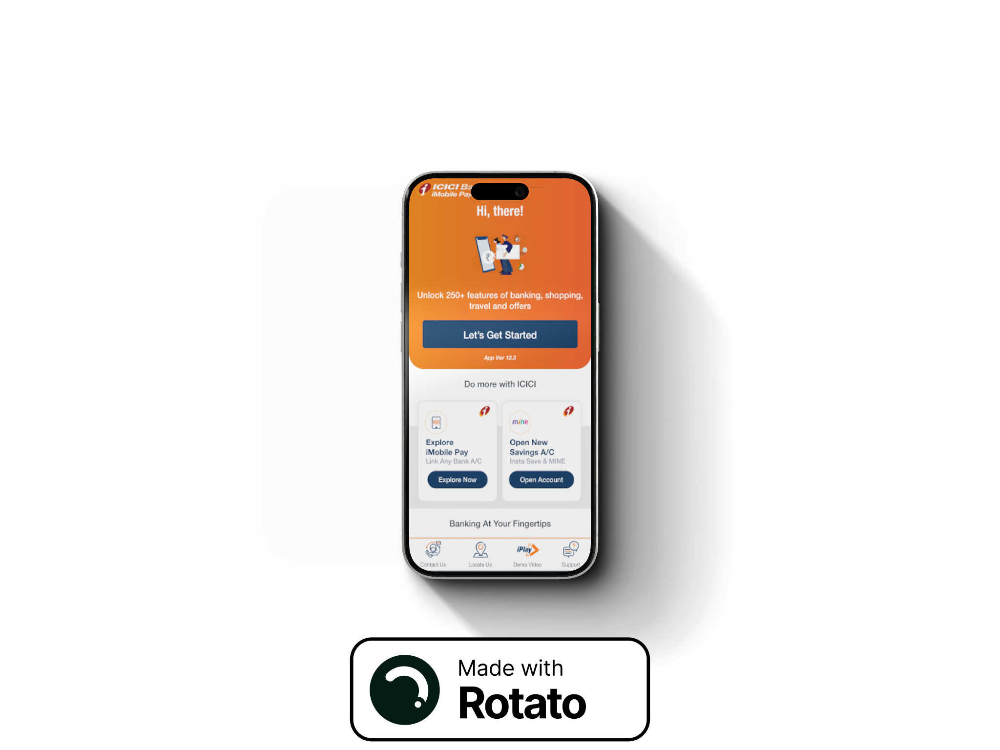
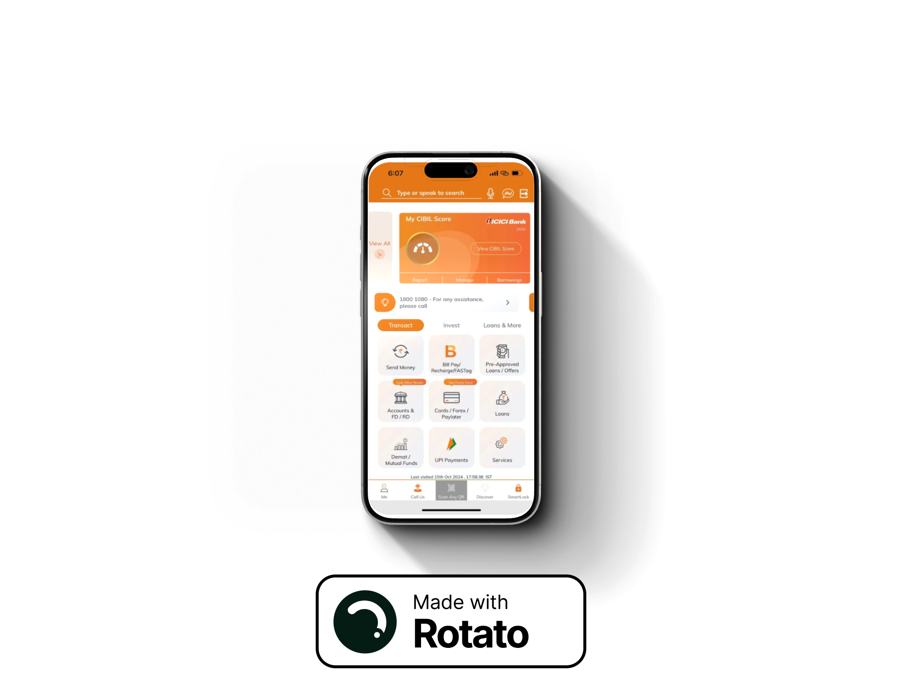
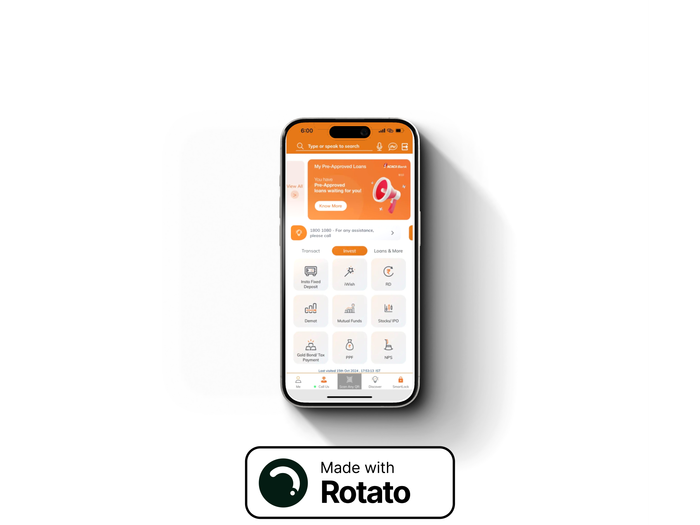
After
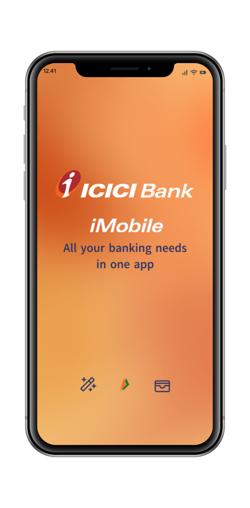
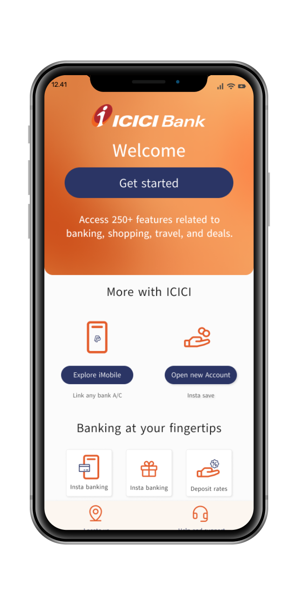
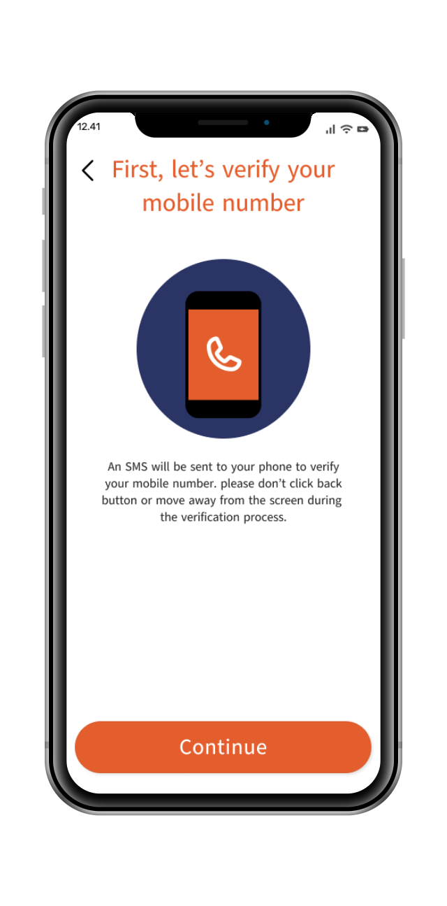
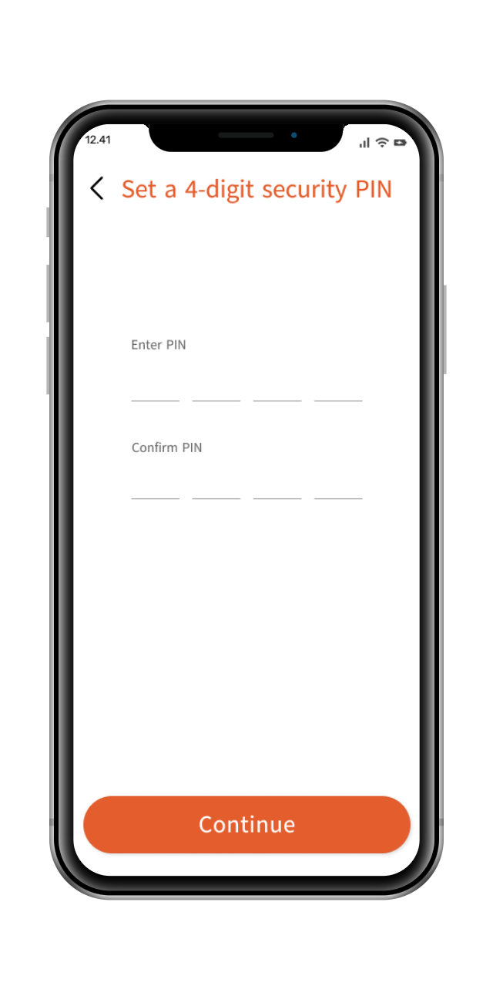
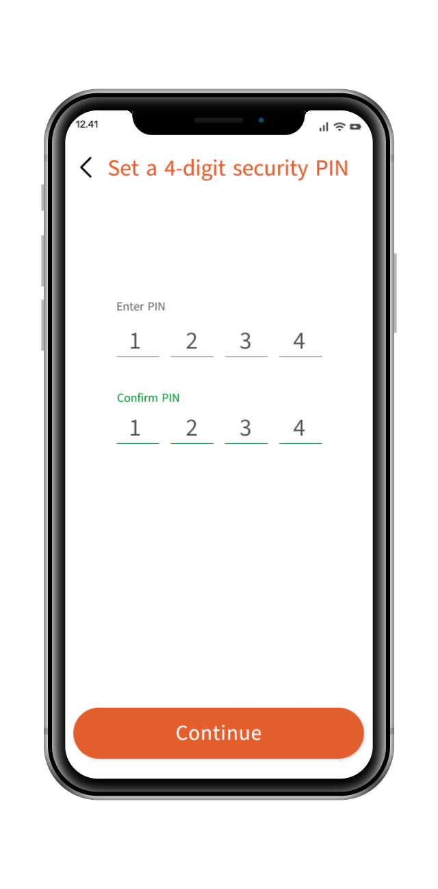
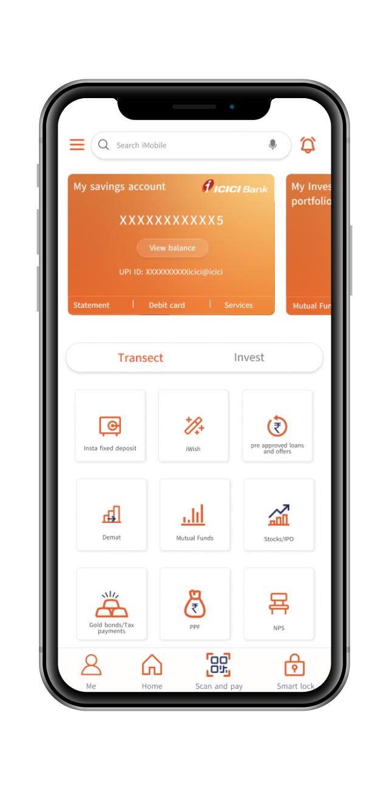
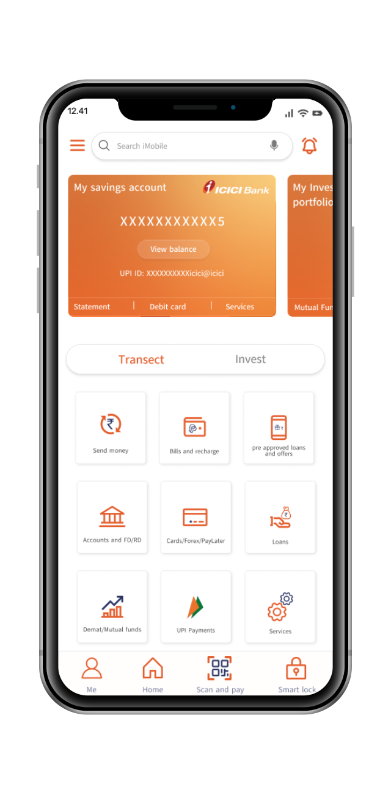
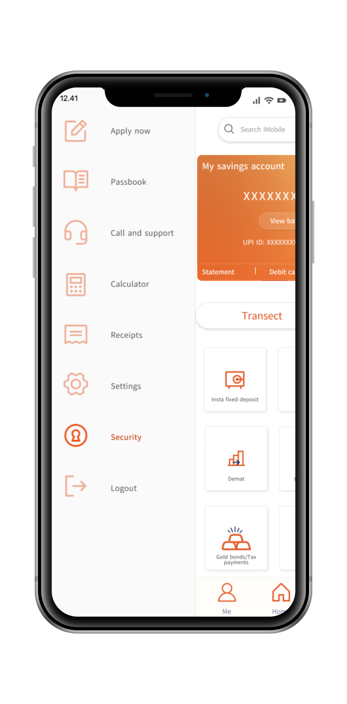
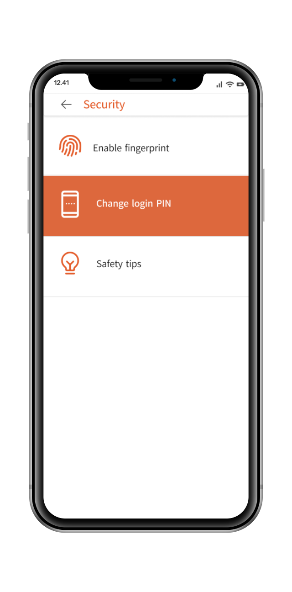
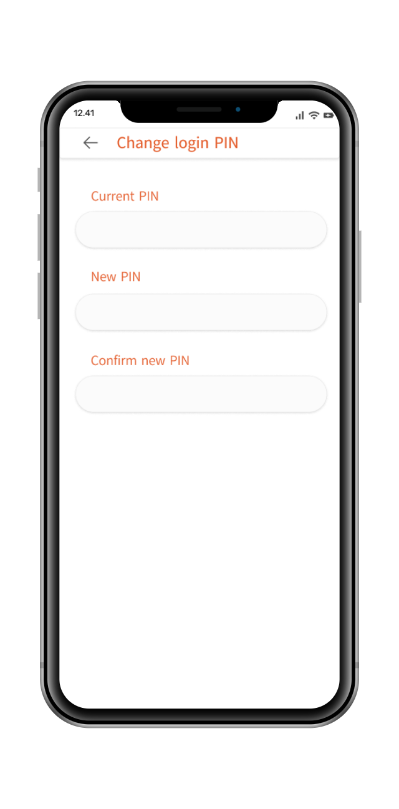
Prototype
This is a linear prototype flow covering two specific interactions: onboarding and changing the security PIN. It is not a full end-to-end prototype of the entire app.